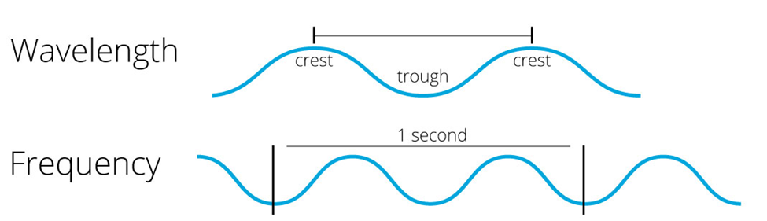
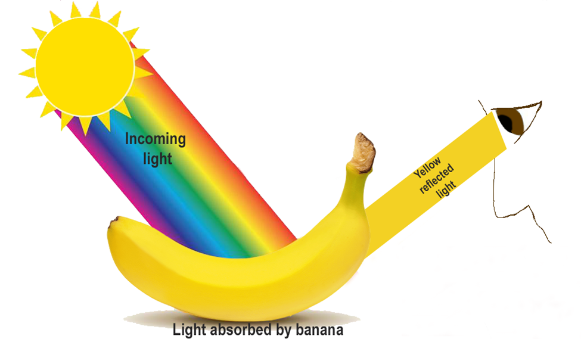
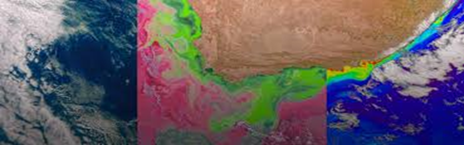
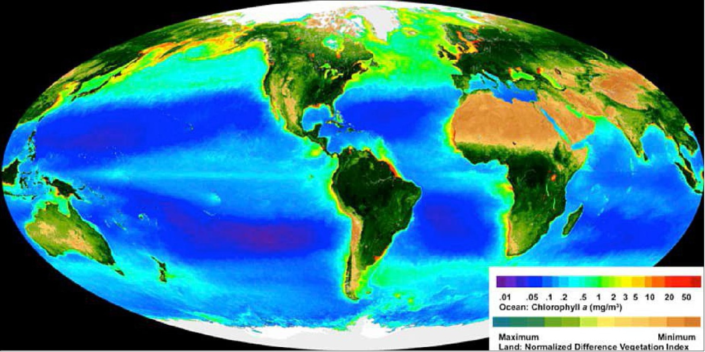

WELCOME
Join us on an exciting journey to explore our planet through the lens of the PACE satellite. Here, you’ll find engaging resources designed for learners of all ages. Discover how light shapes our oceans and atmosphere, learn about the science behind spectral signatures, and gain insights into the effects of climate change. Whether you're a curious beginner or a budding scientist, there's something for everyone. Let’s embark on this adventure together and unlock the mysteries of Earth!
Introduction to PACE
• What is the PACE Satellite?
The PACE satellite is like a special robot that flies high up in space, looking down at Earth. It helps scientists learn more about our oceans, the air, and the clouds!
•What Does It Do?
1. Looks at the Ocean: The PACE satellite can see tiny plants
called phytoplankton in the ocean. These little plants are super
important because they help make oxygen, just like trees do on
land! They are food for many sea animals too.
2. Watches the Air: The satellite can also check the air
around us to see how clean it is. It looks for tiny bits called
aerosols that can come from things like dust, smoke, and
pollution. This helps us know if the air is healthy to
breathe.
3. Studies the Clouds: PACE watches the clouds to learn more
about the weather. It helps scientists understand how clouds can
affect the Earth’s temperature and climate.
•What is Its Purpose?
The main purpose of the PACE satellite is to help scientists understand how our planet works. By looking at the ocean, air, and clouds, scientists can learn about how healthy our oceans are, how clean our air is and how weather and climate change over time
• Why is This Important?
Protecting Nature: By learning about the oceans and air, we can better protect them. Healthy oceans and clean air are important for all living things, including humans, animals, and plants. Fighting Climate Change: The information from PACE helps scientists figure out how climate change is affecting our planet. This way, they can help make plans to keep the Earth safe and healthy for the future.
• In Summary
The PACE satellite is like a super spy in space, helping us learn about our oceans, air, and clouds so we can take better care of our planet!
Introduction to Light-01
Light is what helps us see everything around us! Without light,
our world would be completely dark. But did you know that light
is really special: Scientists are still figuring out all the
details, but we’ve gotten very good at describing what light
does. For example, light travels super-fast at 671 million miles
per hour! Or 3,00,000 kms per seconds. Nothing can go faster
than light. We will explore these sections in this module:
1. Section I - What is light, and why is it important?
2. Section II - How does light make the colors we see?
3. Section III - How does light interact with things in the air
like clouds and aerosols?
4. Section IV - How does light interact with things in the
ocean?
•What is light, why is it important to us?
Light is a kind of energy that helps us see things! It travels in waves and can also be thought of as tiny particles called photons. And why is it important? Light is important because it helps us see the world around us, allows plants to grow by making food from sunlight and keeps us healthy. Excited to know more? We do have a quick for the video.
That was fast!! Now do you know about transmission? It is when light passes through something. Imagine light as a traveler on a road. When it comes to something clear like glass or water, it can go straight through without stopping! That’s why you can see through windows or a glass of water—because the light travels through them easily and reaches your eyes. How about reflection? Reflection is when light bounces off something. Think of light as a ball you throw at a wall. When it hits the wall, it bounces back to you! This is what happens when light hits a mirror or a shiny surface. The light bounces off, and that’s how you can see yourself in a mirror! And refraction, Refraction is when light bends as it passes through something. Imagine you're pushing a toy car from a smooth floor onto a carpet. The car slows down and changes direction a bit when it hits the carpet. Light does the same thing when it moves from air into water or glass—it bends! This is why a straw in a glass of water looks like it's broken or bent—it’s because the light is bending as it passes through the water. Want to know more? Take a small detour and explore the world of light wonders.
Scattering is when light spreads out in different directions. Imagine you throw a handful of sand into the air, and the grains go everywhere! Light does something similar when it hits tiny things like dust or water droplets in the air. Instead of going straight, it spreads in all directions. This is why the sky looks blue during the day—the sunlight gets scattered by the air, and the blue color spreads out across the sky! You might be wondering if you could actually see it, isn’t it? Take this quick video and enjoy yourself
Wow, time for some interesting and serious stuffs. Did you know that light exists in other forms too? Did you know we can actually differentiate light? Interested!! Follow along…
Introduction to Light-02
This spectrum of energy, or spectrum of light, is referred to as the Electromagnetic Spectrum. NASA explores the properties of different wavelength regions in the electromagnetic spectrum ranging from radio waves to gamma rays. Right around the middle of the spectrum we have visible light - the rainbow of colors we know and love. Just shorter than visible light are the ultraviolet wavelengths, which we wear sunscreen to protect ourselves from. Just longer than visible light is infrared, which we sense as warmth on our skin.

Let's look closer at the visible light portion of the spectrum. Blue light is more energetic than red light; i.e., it has a shorter wavelength than red light. Specifically, we can say that blue light wavelengths are between 450-490 nanometers (nm) long whereas red light is 620-750 nm long. One nanometer is the equivalent of 0.000000001 meters. When discussing how light interacts with the ocean and atmosphere, we often refer to wavelengths in terms of nm.

• How does light make the colours we see?
Imagine that light is like a rainbow of colors shining down on everything around us. When light hits an object, like a banana, some colors are absorbed, and some colors are bounced back. Think of a banana as a sponge that soaks up almost all the colors from the rainbow but lets the yellow color bounce back to our eyes. That's why when you look at a banana, it looks yellow! So, when you see a yellow banana, you’re seeing the color that it reflects while the other colors are being soaked up. It's like the banana is playing hide-and-seek with the colors! Colors come from light, and different colors are like different heights of waves in the ocean. When we look at something, it reflects some of those waves back to our eyes, which helps us see its color. Scientists have a special tool called a spectrometer. This tool helps them see which colors, or wavelengths, of light are bouncing off objects. For example, a green banana peel reflects a lot of light around the color green (about 550 nanometers), while a ripe yellow banana reflects light in the red area (about 675 nanometers). Every object has a special pattern, like a fingerprint, called a spectral signature. This signature tells scientists exactly what colors the object reflects. So, if scientists know the fingerprints of things in the ocean, like tiny plants called phytoplankton or mud, they can tell what’s in the water by looking at the light that PACE's spectrometer sees. It’s like a treasure map for finding out what’s in the ocean!
Phytoplankton
Phytoplankton are tiny, plank-like organisms that live in water like how trees and flowers, grow on land.
About Phytoplankton’s Importance
• Oxygen Producers
• Foundation of Food Chain
• Carbon Trapping
• Global Habitat
They create over 50% of the world’s
oxygen essential for life. They produce the oxygen through
photosynthesis like plants in the land.
Phytoplankton are found everywhere from Sunny beaches to icy waters. They live in any water where there is sunlight. The spread all around the earth. Phytoplankton convert sunlight into energy through photosynthesis. This energy goes up the food chain as phytoplankton are eaten by small animals. Then bigger animals eat those small animals. So, phytoplankton are like the first step in food chain that help feed all the animals in the ocean.
Introduction to Aerosols
The role of aerosols in climate science is complex. In general, light-colored particles in the atmosphere will reflect incoming sunlight and cause cooling. Dark-colored particles absorb sunlight and make the atmosphere warmer. Feel free to explore more using the link below.
INTRODUCTION TO CLOUDS
Clouds are super important for life on Earth! They can tell us a lot about the weather and climate. Some clouds help keep us cool by blocking the sun, while others trap heat, making Earth warmer. Scientists want to understand how clouds affect Earth's temperature and help keep the environment in balance.
•How Does the PACE Satellite Study Clouds?
The PACE satellite is like a detective in space, using special
tools to watch clouds from above. Here’s what it does:
1. Watching from Space: PACE looks down at Earth and takes
pictures of clouds to see how big they are, where they are, and
how they change over time.
2. Looking Inside Clouds: PACE can tell what clouds are made
of—tiny water droplets or ice crystals—by using light. It
studies how clouds reflect sunlight back into space.
3. Why It’s Cool: By studying clouds, PACE helps us understand
how weather changes, how much sunlight Earth gets, and even how
much rain or snow we might get. It’s like having a giant weather
station in space!
OCEAN ECOSYSTEMS
Ocean ecosystems are intricate networks of marine life interacting with each other and their surrounding environments, including water, nutrients, and sunlight. These ecosystems are crucial for maintaining global biodiversity, climate regulation, and human livelihood.
The PACE mission aims to enhance our understanding of ocean
ecosystems by providing data on:
• Phytoplankton productivity and health through chlorophyll-a
measurements.
• Ocean color (indicating biological and chemical conditions).
• Carbon and nutrient cycling, and their effects on marine life.
• Ocean-atmosphere interactions, particularly the role of
aerosols in climate regulation.

PACE Exploration data
The PACE (Plankton, Aerosol, Cloud, ocean Ecosystem) mission launched on 8 February 2024 and completed commissioning on 5 April 2024. PACE has released its first science data from three instruments: OCI, HARP2, and SPEXone, with updates planned. The data is organized into five levels, ranging from raw data (Level-1A) to detailed global maps (Level-4), focusing on ocean color and atmospheric properties. The data is provided in small chunks called granules—5-minute segments for OCI and HARP2, and 50-minute segments for SPEXone. While there are some issues, such as location errors and reduced accuracy in certain areas, this initial release is an important step toward better understanding Earth’s oceans and atmosphere.
